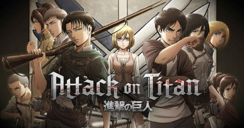
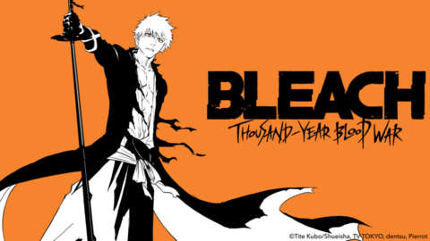
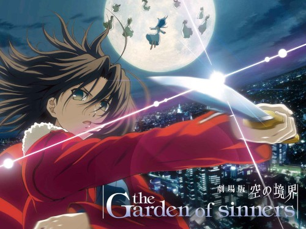

- Attack on Titan
-
Centuries ago, mankind was slaughtered to near extinction by monstrous
humanoid creatures called Titans, forcing humans to hide in fear
behind enormous concentric walls. What makes these giants truly
terrifying is that their taste for human flesh is not born out of
hunger but what appears to be out of pleasure. To ensure their
survival, the remnants of humanity began living within defensive
barriers, resulting in one hundred years without a single titan
encounter. However, that fragile calm is soon shattered when a
colossal Titan manages to breach the supposedly impregnable outer
wall, reigniting the fight for survival against the man-eating
abominations.

- Bleach
-
Ichigo Kurosaki is an ordinary high schooler—until his family is
attacked by a Hollow, a corrupt spirit that seeks to devour human
souls. It is then that he meets a Soul Reaper named Rukia Kuchiki, who
gets injured while protecting Ichigo's family from the assailant. To
save his family, Ichigo accepts Rukia's offer of taking her powers and
becomes a Soul Reaper as a result.

- Garden of Sinners
-
A series of eerily similar suicides occupy newspaper headlines in late
'90s Japan. Amidst all the bizarre resemblances, there is one detail
that stands out above the rest: the victims have all taken their lives
by leaping from the Fujou building, a run-down abandoned structure
rising high above the city.
